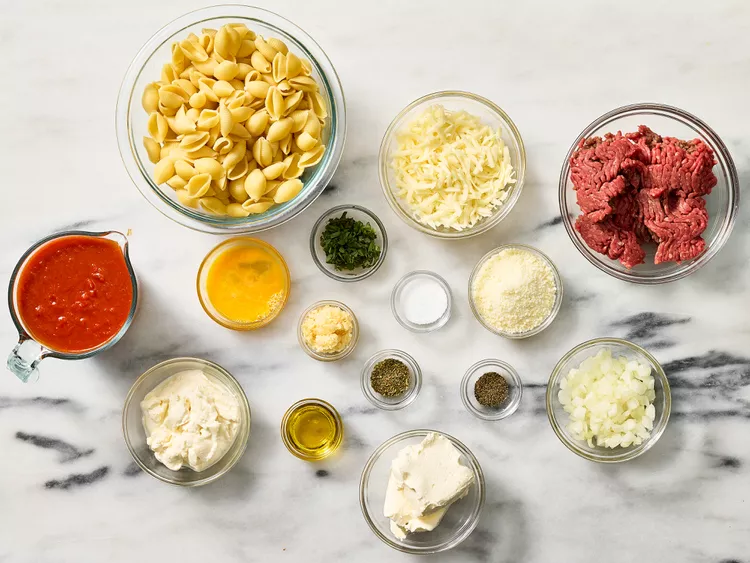
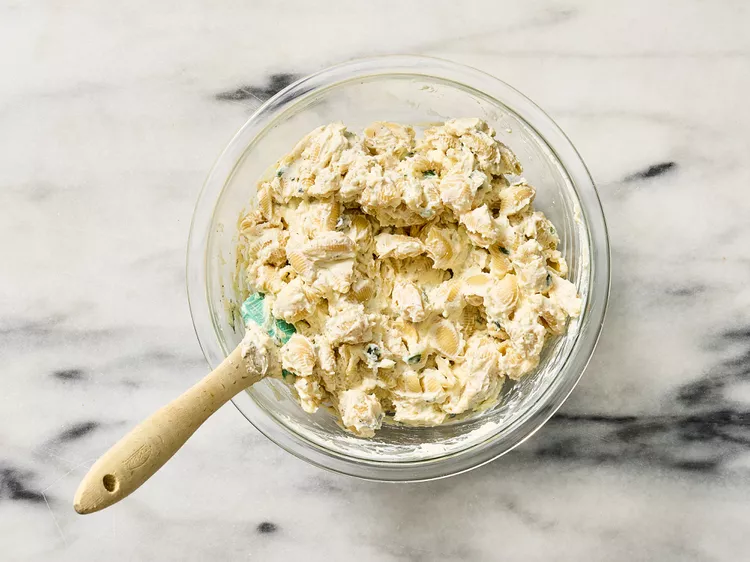
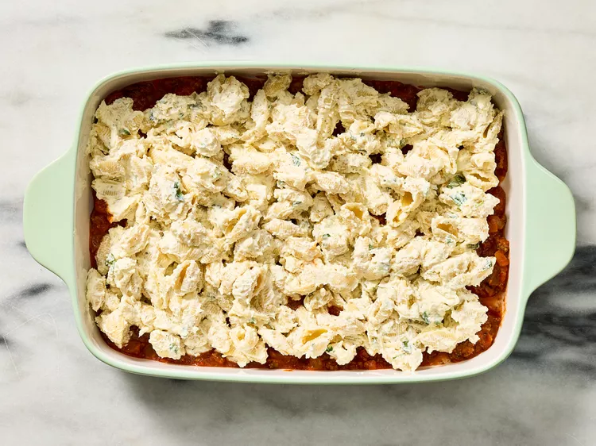
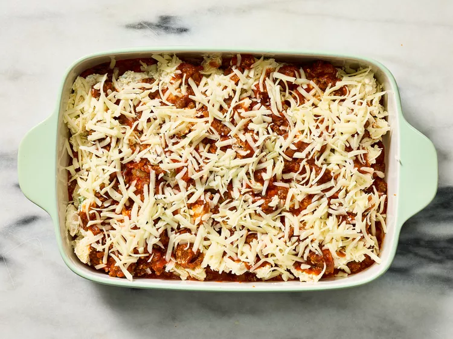
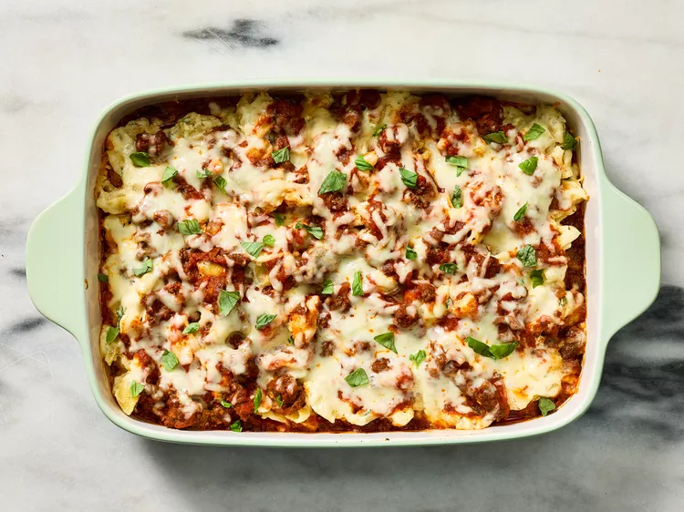
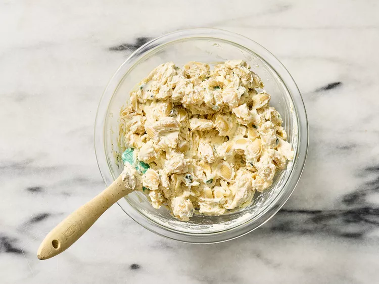
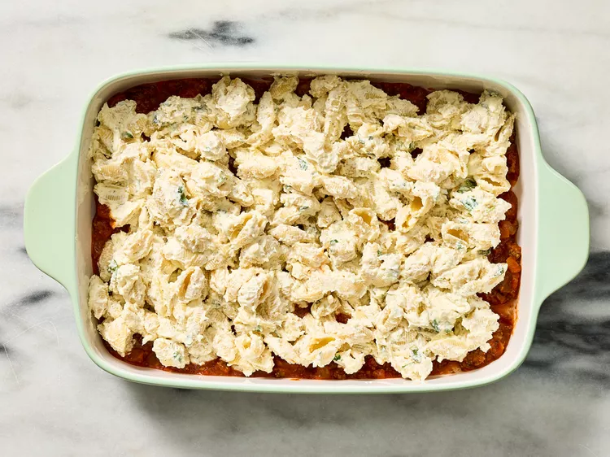
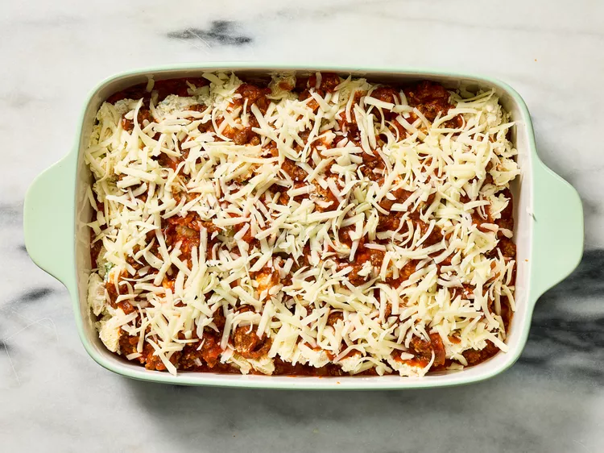
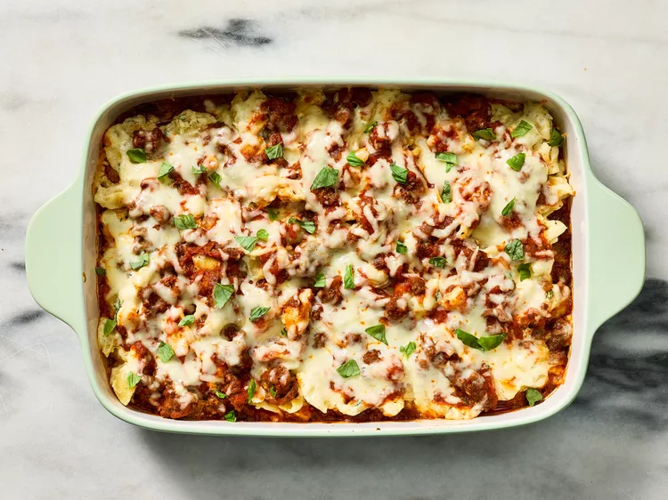

Unstuffed Shells Pasta Bake
This Unstuffed Shells Pasta Bake offers all the flavors of traditional stuffed shells without the hassle. Tender pasta shells are coated in a creamy blend of ricotta, cream cheese, and Parmesan, layered with a savory marinara and ground beef sauce, and topped with golden, bubbling mozzarella. I frist trieed this recipe when I travelled to Italy last summer.
Ingredients
- 12 ounces medium pasta shells
- Cooking spray
- 1 tablespoon extra-virgin olive oil
- 1 pound ground sirloin
- 1 1/4 teaspoons kosher salt, divided
- 1 teaspoon dried Italian seasoning
- 1/2 teaspoon freshly ground black pepper
- 1 yellow onion, chopped
- 1 1/2 tablespoons minced garlic
- 1 (24-ounce) jar marinara sauce
- 1 cup whole-milk ricotta cheese
- 1 (8-ounce) package cream cheese, softened
- 1/2 cup freshly grated Parmesan cheese
- 1/4 cup fresh basil leaves, chopped
- 1 large egg, lightly beaten
- 1 cup shredded mozzarella cheese
Instructions
- Preheat oven to 350°F (180°C). Lightly grease a 13x9-inch baking dish with cooking spray; set aside.
- Bring a large pot of salted water to a boil. Add pasta shells and cook until tender yet firm, about 9 minutes.
- Heat oil in a large skillet. Cook ground sirloin, onion, and garlic until browned. Stir in marinara sauce.
- In a mixing bowl, combine ricotta, cream cheese, Parmesan, basil, egg, and seasoning.
- Layer pasta, sauce, and ricotta mixture in the baking dish. Repeat layers.
- Top with mozzarella cheese and bake uncovered for 20-25 minutes, until golden and bubbly.
- Garnish with fresh basil and serve.
Source
Recipe from Allrecipes
Additional Images

 








Recipe Websites Reviews
This site has a clean, user-friendly interface with clear recipe instructions. It features helpful reviews and variations of recipes.
The site has professional, high-quality images and unique recipe ideas. However, it can sometimes feel overwhelming due to ads.
Recipes are easy to follow with plenty of tips from expert chefs. The extensive search options make it easy to find specific recipes.
Design Inspiration
Clean and minimalistic layout with well-organized sections. Instructions are clear and images enhance comprehension.
Excellent typography and spacing make the content easy to read. The site uses consistent design patterns.
Creative, modern design with a strong focus on visual storytelling. Minimal clutter enhances the user experience.